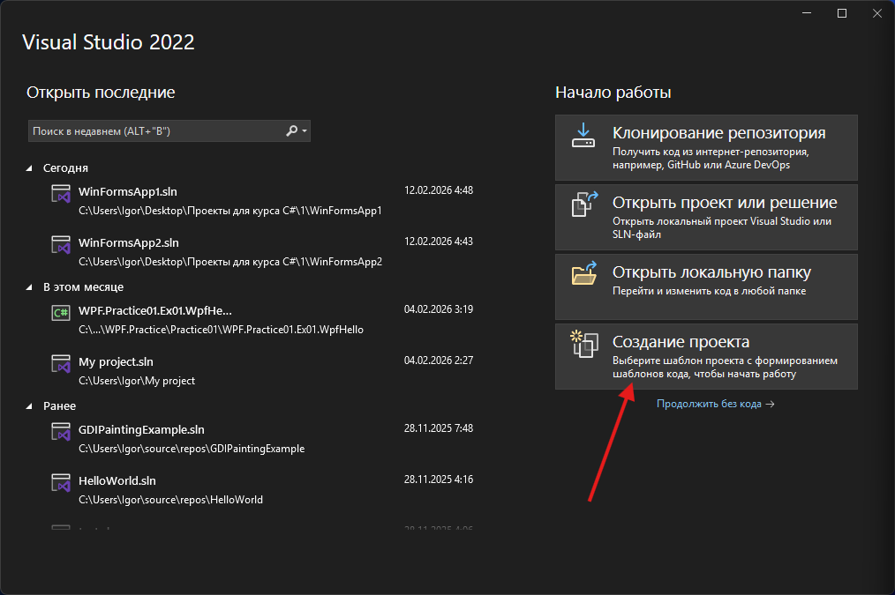
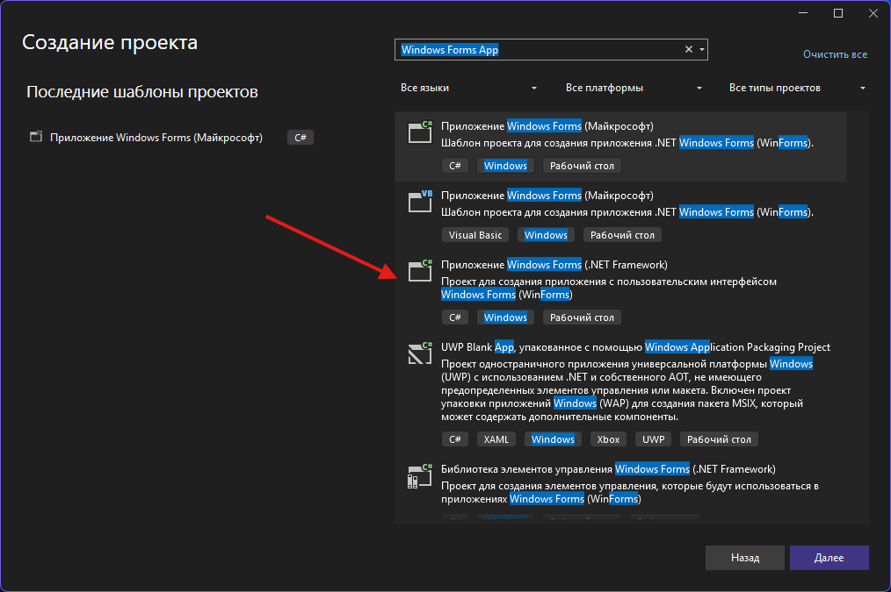
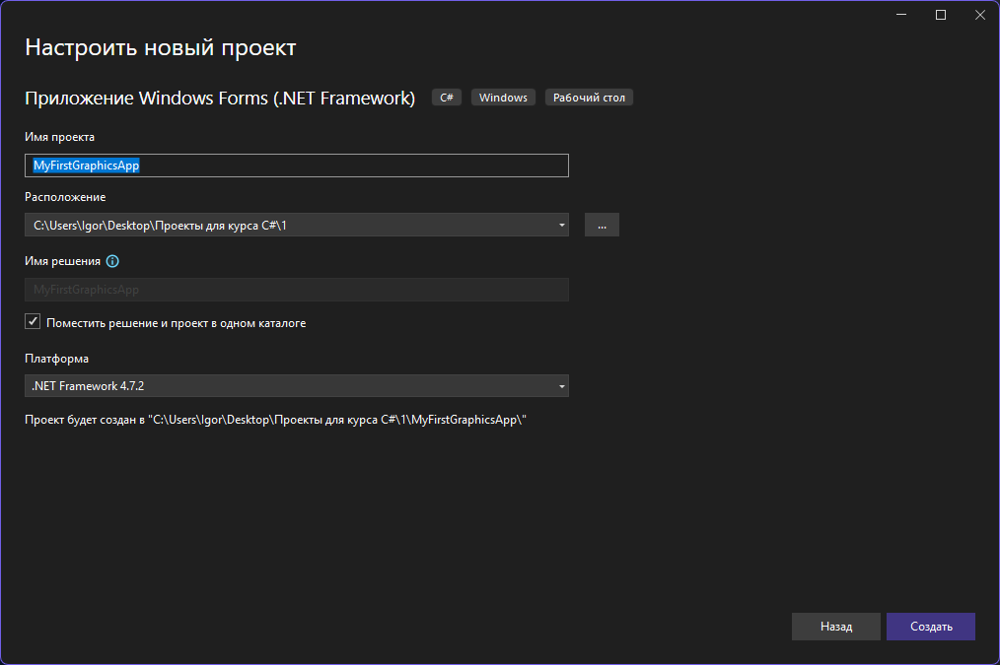
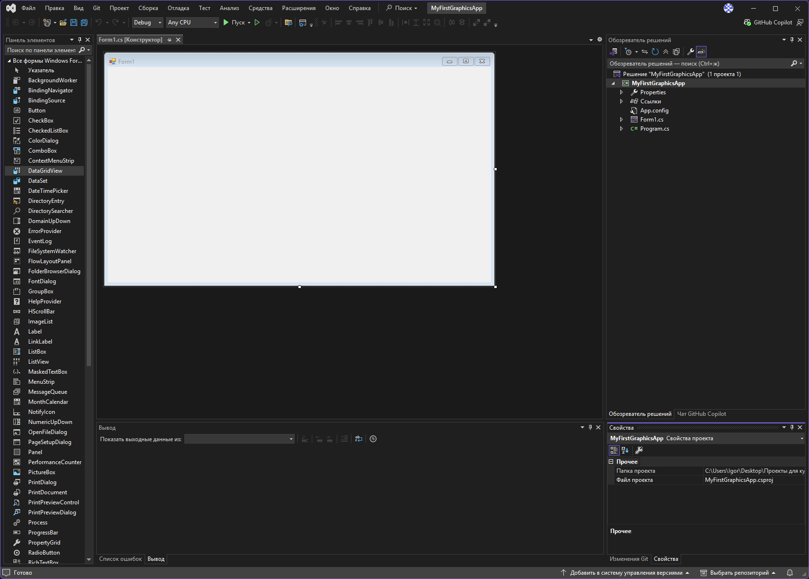
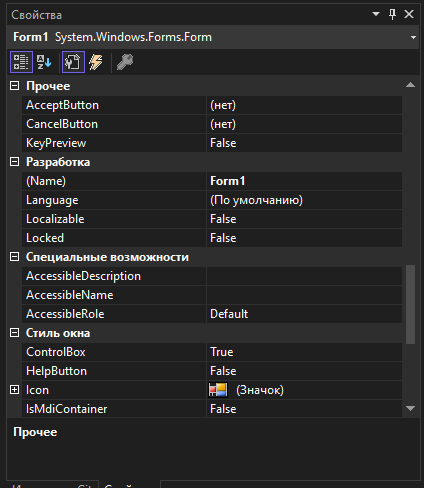
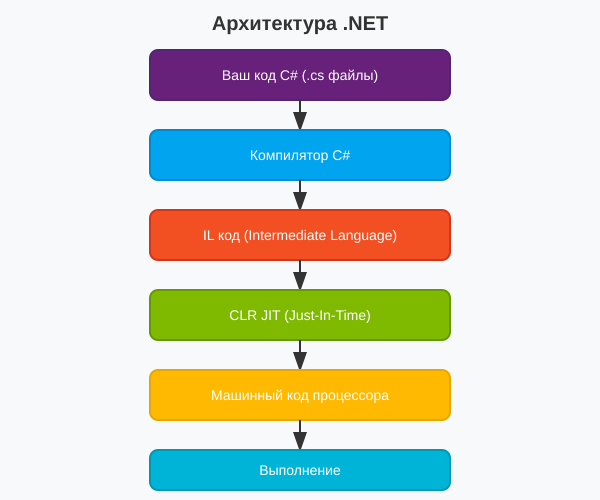
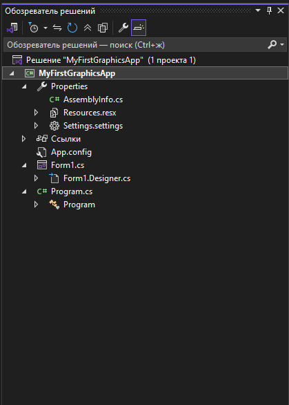
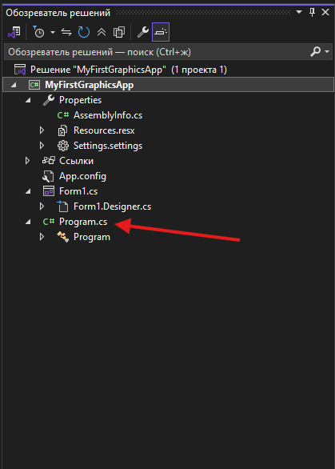

Урок 1.1: Основы C# и .NET
📌 Ключевые моменты этого урока:
- .NET Framework — это платформа для разработки приложений с единой средой выполнения (CLR)
- C# — язык программирования, работающий на платформе .NET
- Структура проекта включает точку входа (Program.cs) и формы для графического интерфейса
- Типы данных определяют, какие значения может хранить переменная (int, string, bool и т.д.)
- Классы и объекты — основа объектно-ориентированного программирования в C#
Создание проекта в Visual Studio
Прежде чем начать программировать, нужно создать проект в Visual Studio. Это первый шаг к созданию любого приложения.
Запуск Visual Studio:

Окно запуска Visual Studio
Шаг 1: Выбор типа проекта

Окно выбора типа проекта
ВАЖНО: Выберите "Windows Forms App (.NET Framework)" — НЕ выбирайте "Windows Forms App" (это .NET Core/6+)
Шаг 2: Настройка нового проекта

Окно настройки нового проекта
Советы по именованию:
- Используйте PascalCase (первая буква заглавная)
- Избегайте пробелов и спецсимволов
- Используйте описательные имена (MyGraphicsApp, а не App1)
Шаг 3: Структура созданного проекта

Интерфейс Visual Studio после создания проекта
Вы видите:
- Слева: Toolbox (компоненты) и Solution Explorer (файлы)
- В центре: Дизайнер форм с пустой формой Form1
- Справа: Окно свойств (Properties)
- Внизу: Вкладки для вывода, ошибок и т.д.
Быстрый старт: первая настройка

Настройка свойств формы
Сразу после создания проекта:
- Измените свойства формы через окно Properties:
- (Name): MainForm
- Text: "Мое первое приложение"
- Size: 800, 600
- StartPosition: CenterScreen
- BackColor: White
- Сохраните проект: Ctrl+Shift+S — сохранить все
- Запустите приложение: F5 — запустить с отладкой
- Остановите приложение: Shift+F5 — остановить отладку
Что такое .NET Framework
.NET Framework — это платформа для разработки приложений от Microsoft, которая предоставляет обширную библиотеку классов и среду выполнения для различных языков программирования, включая C#. Это основа, на которой построены все приложения, которые мы будем создавать.
Почему .NET важен для графического программирования?
Графическое программирование требует работы с системными ресурсами, управления памятью и взаимодействия с операционной системой. .NET обеспечивает:
- Управление памятью — автоматическая очистка неиспользуемых объектов (garbage collection)
- Единую платформу — одинаковый код работает на разных версиях Windows
- Богатую библиотеку — готовые классы для работы с графикой (GDI+, WPF)
- Безопасность — контроль доступа к системным ресурсам
Основные компоненты .NET:
- CLR (Common Language Runtime) — среда выполнения, которая управляет выполнением кода. Именно CLR переводит ваш код в команды процессора и следит за ресурсами.
- BCL (Base Class Library) — базовые классы и типы данных, необходимые для любого приложения
- FCL (Framework Class Library) — расширенная библиотека классов для специфических задач (графика, тестирование, сеть и т.д.)
Архитектура .NET:

Процесс компиляции и выполнения кода в .NET
Структура C# проекта
При создании приложения Windows Forms вы получаете структурированный набор файлов. Каждый файл имеет свое назначение:

Структура проекта в Solution Explorer
MyProject/
├── Program.cs // Точка входа приложения (где всё начинается)
├── Form1.cs // Основная форма (логика интерфейса)
├── Form1.Designer.cs // Дизайнер формы (автоматически генерируется)
├── Form1.resx // Ресурсы (изображения, значки и т.д.)
├── Properties/
│ └── AssemblyInfo.cs // Информация о сборке
├── bin/ // Скомпилированный код (exe, dll файлы)
└── obj/ // Промежуточные файлы компиляцииProgram.cs — точка входа приложения:
Это главный файл вашего приложения. Здесь находится метод Main(), который запускается в первую очередь. Именно отсюда загружается основная форма.

Файл Program.cs с точкой входа приложения
using System;
using System.Windows.Forms;
namespace MyProject
{
static class Program
{
// [STAThread] указывает на потокобезопасность для интерфейса
[STAThread]
static void Main()
{
// Включить стили визуального оформления (кнопки, текстбоксы выглядят как в Windows)
Application.EnableVisualStyles();
// Совместимость с разными версиями Windows
Application.SetCompatibleTextRenderingDefault(false);
// Запустить главное окно приложения
Application.Run(new Form1());
}
}
}Что происходит при запуске приложения:
- CLR начинает выполнение метода Main()
- EnableVisualStyles() настраивает внешний вид элементов управления
- Application.Run(new Form1()) создает и показывает главное окно
- Приложение работает, реагируя на события пользователя
- Когда закрывается главное окно, приложение завершает работу
Основные типы данных
В C# типы данных определяют, какой тип информации может хранить переменная. Это критически важно для графического программирования, где вам нужно работать с координатами, цветами и параметрами объектов.
Примитивные типы данных:
// Целые числа
int x = 100; // 32-битное целое число (-2 млрд до 2 млрд)
short width = 50; // 16-битное число (меньше диапазон, но быстрее)
long fileSize = 999999; // 64-битное число (для огромных чисел)
// Числа с плавающей точкой (для координат и расчетов)
float rotation = 45.5f; // 32-битное (добавьте 'f' в конце)
double angle = 3.14159; // 64-битное (более точное)
// Логические и текстовые значения
bool isVisible = true; // true или false
char symbol = 'A'; // Один символ
string message = "Hello"; // Строка текста
// Цвета и структуры
System.Drawing.Color red = System.Drawing.Color.Red;
System.Drawing.Point center = new System.Drawing.Point(400, 300);Почему это важно для графики:
- int используется для координат (x, y), размеров и индексов
- double/float для углов поворота, масштабирования и вычислений расстояний
- Color для работы с цветами элементов
- Point, Size, Rectangle — специальные структуры для геометрии
Примеры использования в графике:
// Координаты прямоугольника
int left = 50, top = 50, width = 200, height = 100;
// Цвет RGB (красный = 255, зеленый = 0, синий = 0)
Color myColor = Color.FromArgb(255, 0, 0); // Красный цвет
// Точка на экране
Point startPoint = new Point(100, 50);
// Размер (используется для окон и фигур)
Size formSize = new Size(800, 600);
// Прямоугольник (положение + размер)
Rectangle drawArea = new Rectangle(10, 10, 780, 580);Классы и объекты
Класс — это шаблон (чертёж) для создания объектов. Объект — это конкретный экземпляр этого класса с его собственными данными. Это фундаментальная концепция объектно-ориентированного программирования.
Аналогия из реальной жизни:
- Класс = Чертёж дома (описание, как он должен выглядеть)
- Объект = Конкретный дом на улице Ленина (построенный по чертежу)
- Свойства = Характеристики дома (цвет, высота, кол-во окон)
- Методы = Действия, которые может делать дом (открывать двери, светить окнами)
Пример класса для графического программирования:
// Определение класса — это шаблон
public class Rectangle
{
// Свойства — характеристики объекта
public int X { get; set; } // X координата
public int Y { get; set; } // Y координата
public int Width { get; set; } // Ширина
public int Height { get; set; } // Высота
public Color FillColor { get; set; } // Цвет заливки
// Конструктор — метод создания объекта
public Rectangle(int x, int y, int width, int height)
{
X = x;
Y = y;
Width = width;
Height = height;
FillColor = Color.Blue;
}
// Методы — действия, которые может делать объект
public int GetArea()
{
return Width * Height;
}
public void Move(int newX, int newY)
{
X = newX;
Y = newY;
}
public void Resize(int newWidth, int newHeight)
{
Width = newWidth;
Height = newHeight;
}
}
// Создание объектов (экземпляров класса)
Rectangle rect1 = new Rectangle(10, 10, 100, 50);
Rectangle rect2 = new Rectangle(150, 100, 200, 75);
// Работа с объектом
int area = rect1.GetArea(); // Получить площадь = 5000
rect1.Move(50, 50); // Переместить
rect1.FillColor = Color.Red; // Изменить цвет
rect1.Resize(150, 100); // Изменить размерПочему классы важны в графике:
- Вы можете создать класс для рисуемой фигуры, хранящий её свойства (позиция, размер, цвет)
- Методы класса могут выполнять действия (нарисовать, переместить, изменить размер)
- Легко работать с множеством объектов одного типа (массивом прямоугольников, кругов и т.д.)
- Код становится организованным и переиспользуемым
Частые ошибки начинающих:
// ❌ НЕПРАВИЛЬНО: не забывайте ключевое слово new
Rectangle rect; // объект не создан!
// rect.GetArea(); // ошибка — NullReferenceException
// ✅ ПРАВИЛЬНО:
Rectangle rect = new Rectangle(0, 0, 100, 100);
int area = rect.GetArea(); // работает правильно
// ❌ НЕПРАВИЛЬНО: путаница между class (шаблон) и object (конкретный экземпляр)
// Rectangle — это класс (шаблон)
// rect — это объект (конкретный экземпляр класса Rectangle)
// ✅ ПРАВИЛЬНО:
class Shape { } // это класс (шаблон)
Shape shape = new Shape(); // shape — это объект/экземплярBest Practices:
- Всегда используйте свойства для доступа к данным — это позволяет менять внутреннюю реализацию без изменения остального кода
- Выделите понять логику класса — если класс делает слишком много, разделите его на несколько классов
- Используйте говорящие имена — Rectangle лучше, чем Rect или R
- Добавляйте конструкторы — они помогают создавать объекты с правильными начальными значениями
Практическое задание
Задание 1: Создание первого проекта
- Запустите Visual Studio
- Нажмите "Создать новый проект"
- В строке поиска введите "Windows Forms App"
- Выберите "Windows Forms App (.NET Framework)"
- Укажите имя проекта: "MyFirstGraphicsApp"
- Выберите расположение для сохранения проекта
- Нажмите "Создать"
- Дождитесь загрузки Visual Studio и появления дизайнера форм
Задание 2: Изучение интерфейса Visual Studio
- Изучите структуру проекта в Solution Explorer (Ctrl+Alt+L)
- Найдите и откройте Toolbox (Ctrl+Alt+X)
- Откройте окно свойств (F4)
- Переключитесь между Дизайнером (Shift+F7) и Кодом (F7)
- Попробуйте изменить размер формы, перетаскивая её края
Задание 3: Настройка формы
- В Дизайнере форм выделите форму (кликните по ней)
- В окне Properties измените следующие свойства:
- (Name): MainForm
- Text: "Мое первое приложение"
- Size: 800, 600
- StartPosition: CenterScreen
- BackColor: LightBlue
- Сохраните проект (Ctrl+Shift+S)
- Запустите приложение (F5)
- Убедитесь, что форма отображается по центру экрана с новыми настройками
- Закройте приложение
Задание 4: Программная настройка формы
- Перейдите к коду формы (F7)
- Найдите конструктор MainForm()
- Добавьте следующий код после InitializeComponent():
public MainForm() { InitializeComponent(); // Настройка формы программно this.Text = "Мое первое приложение"; this.Size = new Size(600, 400); this.StartPosition = FormStartPosition.CenterScreen; this.BackColor = Color.White; } - Убедитесь, что в начале файла есть using System.Drawing;
- Запустите приложение (F5) и проверьте результат
Задание 5: Изучение файлов проекта
- В Solution Explorer откройте файл Program.cs
- Изучите метод Main() — точку входа приложения
- Откройте файл Form1.Designer.cs (не редактируйте!)
- Посмотрите на метод InitializeComponent()
- Разверните папку Properties и откройте AssemblyInfo.cs
- Измените версию сборки и перекомпилируйте проект (Ctrl+Shift+B)
Проверка знаний
Ответьте на вопросы, чтобы проверить, насколько хорошо вы усвоили материал: